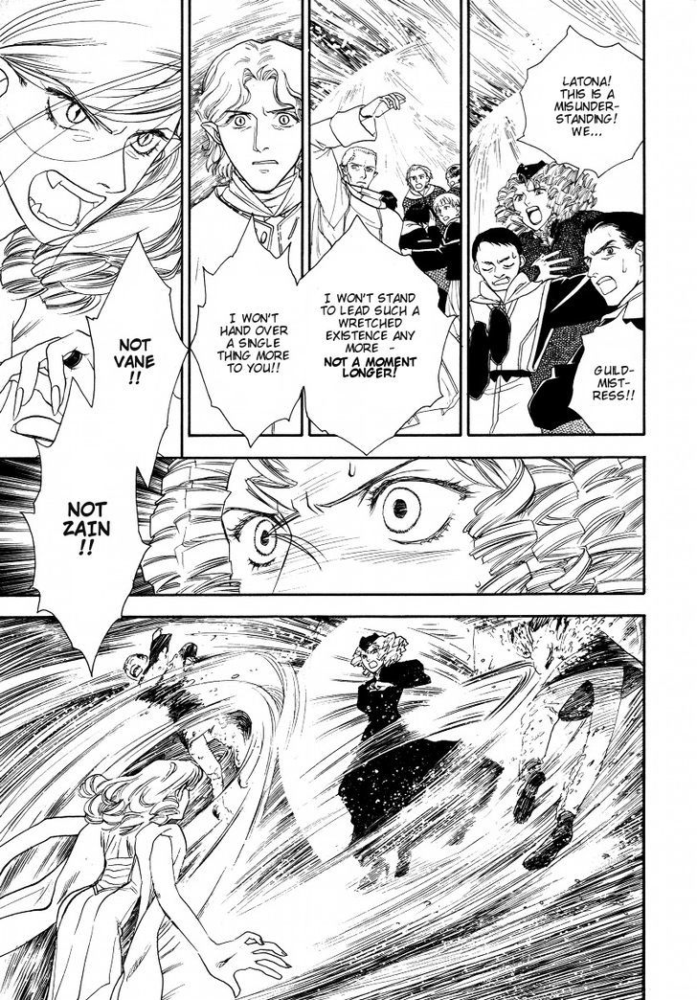

BLOG
Testing! Testing! Sorry~!
THE JOURNAL
Love, or Duty? - An Analysis of Ghaleon and Dyne
Ah, my favorite tried and true topic. I figured I may as well spill my guts with regards to my thoughts on these two.
Note: All translations of Vheen Hikuusen Monogatari and tankoubons can be sourced to sceneryrecalled. Younenki no Owari translations can be sourced to Deja Vu scanlations.

Dearness. What, exactly, is the expression of dearness?
In my interpretation, Ghaleon's heart holds dear only Dyne in an expression of love.
Dyne is the polar opposite of this, an open, loving person; the epitome of warmth. The two are like night and day; cat and dog. This is already a ship dynamic people love, honestly. But I'm here to go deeper into it.
See, Ghaleon and Dyne, according to the tankoubons, are a direct parallel of Latona and Zain, featured in VHM Chapter 3.
Latona is clearly, and aimlessly, in love with Zain. I'm unsure if her feelings were reciprocated, but she ends up lashing out on the humans for taking Zain from her.

Sound familiar? Now, I'm not here to talk about how I think the Mazoku are in the right for being furious about the humans gentrifying their land (and dubbing them the Vile Tribe), I'm here to talk about Ghaleon's love for Dyne.
Maybe I'll talk about Latona and her rage some other time. But she's a direct parallel to Ghaleon's fury towards Althena for taking Dyne from him!
Remember this?
Yeah, I'd be pretty furious if the guy I travelled with for ages completely ignored my pleas that what he was doing would bring only despair.
But let's bring it back around to Dyne.
Dyne is stupid and sweet. The easiest kind of guy to fall in love with, really.
Throughout the chapter, he shows interest in a lot of things Ghaleon has to say about his home.
He also seems to have a lot of faith in Ghaleon's abilities, and outright refers to him as his companion.
But when it comes to Ghaleon's emotions, Dyne is oblivious, for the most part.
In example, Ghaleon has been in despair for many, many years. He hides this well, and Dyne doesn't catch on.
But when Dyne catches onto Lemia's fear...

Ghaleon asks him to ignore it. Hesitantly-- Not in jealousy, but most likely out of a sense of "this is what's best for me, it's probably what's best for her." Yes, Lemia is the deputy guildmistress and pretending not to notice IS for the best, but... You think they could at least show support for her in privacy, right?
Of course not. Ghaleon thinks hiding emotions is the best way to go about things.